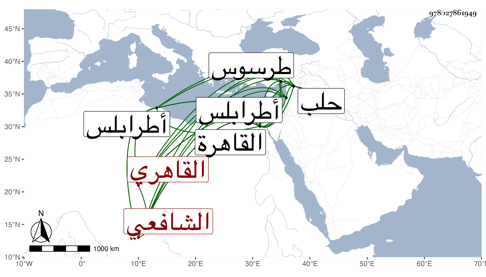

0902Sakhawi.DawLamic.ITO20230111-ara1.EIS1600.978027861949
Biography ID: 978027861949
127
محمد بن أحمد بن محمد بن خلف الزين أبو الخير القاهري الشافعي ويعرف أولا بابن الفقيه وبابن النحاس حرفة أبيه ثم حرفته . ولد في رجب سنة خمس عشرة وثمانمائة بالقاهرة ونشأ بها فحفظ القرآن عند أي عبد القادر المقري بل وجوده عليه والتبريزي وبعض الحاوي وحضر يسيرا عن الشرف السبكي والجمال الأمشاطي ولكنه لم يتميز ولا كاد بل استمر على عاميته وسمع بالقاهرة على شيخنا وغيره وسافر لحلب وأخذ الشفا عن حافظها البرهان وجود الخط على الزين بن الصائغ وتكسب كوالده بسوق النحاس من تحت الربع وكثر طلبه بديون عليه للقضاة وغيرهم وهو مع ذلك يتردد للمزارات كالليث وغيره ويتلو مع قراء الجوق إلى أن رافع عند الظاهر جقمق في أبي العباس الوفائي الذي كان جوهر القنقباي الخازندار ألقى بمقاليده إليه وأكثر من الاعتماد عليه مع كونه منتميا إليه ولكن حمله على ذلك كثرة مطالبة المشار إليه بماله عليه من الديون فرأى الظاهر من جرأته وإقدامه أمرا عجبا وفهم هو من تقحم الظاهر على الإحاطة بحواصل جوهر ومخبآته ما تمكن معه من المرافعة ، وكان مما أبداه أن عنده من آلات السلاح كالخود ونحوها للطائفة العزيزية شيء كثير وعنده تنور وتحف تفوق الوصف فأرسل معه من أحضر سيئا من ذلك بعد إمساك المشار إليه فوقع هذا عند السلطان موقعا عظيما وأعطى أبا الخير خمسين دينارا وبعض صوف وبعلبكي ونحو ذلك وحضه على ملازمة خدمته فصار يطلع إليه أحيانا وربما أخذ معه بعض الأشغال من الأمور السهلة فتزايد ميل السلطان إليه ، ولازال يسترسل في هذا المهيع حتى رافع في الولوي السفطي أيضا وطلبه بإذن السلطان لباب القاياتي قاضي الشافعية حينئذ ونزع منه ثريا مكفته ادعى استمرارها في ملكه واعترف له السفطي بها وأنها معلقة بالجمالية واستقر به السلطان في وكالته ثم لما استقر السفطي في القضاء انتزع له منه وكالة بيت المال ثم أعطاه أيضا نظر سعيد السعداء ثم جامع عمرو ثم الجوالي ثم الكسوة ثم البيمارستان ثم المواريث ونظر السواقي ولم يلبث انفصاله عنهما خاصة وزاد اختصاصه بالسلطان إلى الغاية واشتهر وتعدى طوره وفعل كل قبيح لاسيما فيما له عليه التحدث والولاية وصارت الأمور جليلها وحقيرها مفوضة إليه لا ينبرم أمر دونه ولا يعول إلا عليه وكثر السعي من بابه وزيد في التنويه بذكره وخطابه وازدحم عنده الناس من سائر الأصناف والأجناس ونادمه غير واحد من أهل الأدب ذوي الفضائل والمتعالين في الرتب إلى غيرهم ممن لايراعي للعلم حقه بل ربما يصرح الواحد منهم بكونه في عبوديته قد ملك رقه وتطبع هو الحشمة فتكلف وتنطع في ألفاظه التي ليس بها يعرف وغلط حتى في نفسه وأغلظ حتى في تخيله وحدسه وصار إلى رياسة وضخامة وغفلة عما يلاقيه أمامه ونفوذ كلمته وشدة شكيمته وهابته الأمراء والقضاة فضلا عن المباشرين والنظار وهادته الرؤساء من سائر الأقطار والسلطان فيما يعيده ويبديه يزيد في إرخاء العنان له والتصريح بشكر أياديه والدعاء الذي يجهر به بحضرة عدوه فكيف عند من يواليه لقيامه بما لم ينهض به غيره من جلب الأموال والتحف ولباسه لأجله من المظالم ما ارتدي به والتحف مع اشتغال هذا بالدندنة بالجمالي ناظر الخاص واشتغال قلب المشار إليه بما يشافهه به من الذم والانتقاص وهو مظهر التغافل عن أمره مبطن تدبير رأيه في طمس أثره وخفض قدره إلى أن اتفق مجيء البلاطنسي في محنة الشاميين بأحد أعوان صاحب الترجمة أبي الفتح الطيبي وما به كل منهم يقاسي فصعد إلى السلطان في أواخر جمادى الأولى سنة أربع وخمسين وأعلمه بمزيد الضرر من الطيبي على المسلمين فبادر بعد الإصغاء للمقال بعزله وكان هذا ابتداء إهانة صاحب الترجمة وذله فانه بعد بيسير وثب طائفة من المماليك فضربوه وهجموا بيته وأخذوا ما به من جليل وحقير وأعانتهم العامة حتى أحرق بابه وعظم صراخ كل من أعوانه وانتحابه ولم يلبث أن جاء إليه نقيب الجيش فأخذه ماشيا بعد ذلك التيه والطيش وذهب به لقاضي الشافعية المناوي وانطلقت الألسن بما اشتمل عليه من القبائح والمساوئ ورام السلطان بذلك تسكين الفتنة ويأتي الله إلا صرف تلك المحنة فاستميل السلطان حتى رسم بنقله لباب المالكي لتحتم قتله فما وافق القاضي على ذلك بل أمر بسجنه في الديلم لتتضح له في قتله المسالك فأخذوه على حمار وفي عنقه جنزير وأودعوه فيه بعد إهانة من العامة وذل كبير فأقام به إلى أن أمر السلطان بعوده للمناوي لكونه أقرب للغرض الذي مضمره وله ناوي فحينئذ بادر إلى الحكم باسلامه وحقن دمه وتعزيره ورفع ألمه ومع ذلك كله فكف الله السلطان عن عوده لمنزله وأهله وأمر باخراجه من القاهرة منفيا إلى طرسوس فأخرج ليلا خوفا من اغتياله الذي به ترتاح النفوس ثم صار يؤمر في كل قليل بضربه مع التبريح به والتنكيل بل ينقل أيضا من مكان إلى مكان قصدا لتوالي الذل بذلك والامتهان ولله در القائل :
| يا من علا وعلوه | أعجوبة بين البشر |
| غلط الزمان برفع قد | رك ثم حطك واعتذر |
ثم بعد بيسير لم يشعر الناس إلا وقد أشيع أنه ببيت أمير المؤمنين ليطلع معه في غد للشفاعة فيه بالتعيين ووصل العلم به للجمالي المعين فدبر إفساد ما تقرر وتعين وجاء قاصد السلطان إلى الخليفة يأمره بالكف عن الطلوع معه رديفه فصعد هذا منفردا ولم يبلغ بذلك مقصدا بل بادر السلطان لإنكار مجيئه بدون علمه فأجاب بسبق الأذن فيه برقمه وكادر وحاقق فجحد وشاقق وأمر بضربه بين يديه ولم يجن بصنيعه عليه ثم أخرجه منفيا وتكلف الجمال في هذا ما يفوق الوصف نشرا وطيا واستمر في نفيه وإبعاده وحبسه عن تعديه وفساده حتى مات الظاهر ثم الجمالي المذكور وراسل يستدعي المجيء والحضور ظانا هو وأتباعه عوده لأعظم مما كان لخلو الجو بعزل الأنصاري وموت الجمالي أعظم الأركان فرسم حينئذ بمجيئه بيقين ووصل في رمضان سنة ثلاث وستين وهو متوعك مكروب وبالوفاء بما ألزم به نفسه مطلوب فأحدث كثيرا من الظلامات التي باء باثمها في الحياة وبعد الممات ولكن حبسه الله عن البلوغ لكثير من قصده وبغيته خصوصا لمن أضمر السوء به ممن كان السبب في إبقاء مهجته فأنه أول ما قدم انتزع منه خطابة جامع عمرو ونظره ووالي التعرض فيه وكرره هذا بعد مجيء المشار إليه أول قدومه للسلام عليه وقطعه الاعتكاف من أجله بل وأهدى له ما يكتفي بدونه من مثله . وبالجملة فلم يصل لشيء مما كان في أمله ولا رأى مسلكا للولوج في تلك المسالك المألوفة من قبله بل خاب ظنه وظن جماعته وطاب له الموت بصريحه وكنايته وصار ألمه في نمو وتدبيره في انتقاض وعلمه في انحطاط وانخفاض إلى أن ظهر عجزه واشتهر وتعرض له بالامتهان صبيان الوزر وجيء به وهو مريض لا حركة فيه سوى اللسان محمولا في قفص امتثالا لأمر السلطان لباب المحب كاتب السر الشريف لعمل حسابه المشمول بالتبديل والتحريف فلم يتم له أمره بل قصم ظهره وانقضى عمره . ومات عن قرب سنة أربع وستين في ليلة الجمعة العشرين من المحرم ولا تمكن وارثه من كفن مما هو في حوزته ولا له تسلم حتى تصدق محمد بن الأهناسي عليه بالكفن الجالب لكل مكروه وعفن وصلى عليه من الغد عقب الصلاة بجامع الحاكم الشهير ومشى في جنازته فيما قيل نحو سبعة أنفس بالتقدير أو بالتحرير ولسان حاله ينشد :
| إلى حتفي سعى قدمى | أرى قدمي أراق دمى |
وبكى العوام لأجل قلة من تبعه لما رأى من العز والجاه فسبحان القادر القاهر ، وقد لقيته بجامع طيلان من طرابلس في رحلتي إليها وبالغ في الإكرام والاحترام وأرسل إلى بدراهم لها وقع فامتنعت من قبولها بحيث أنه لما قدم القاهرة حكى ذلك لغرضه وأكثر حين اجتماعي به من التعجب من كوني لم أجيء إليه أيام عزه وأنشدني ما زعم أنه خاطب به العلاء بن أقبرس فقال :
| أجج النحاس نارا | أحرقت فلس ابن أقبرس |
| فلذا صار ينادي | أحرق النحاس ذا الفلس |
عفا الله عنه وعن سائر المسلمين .
